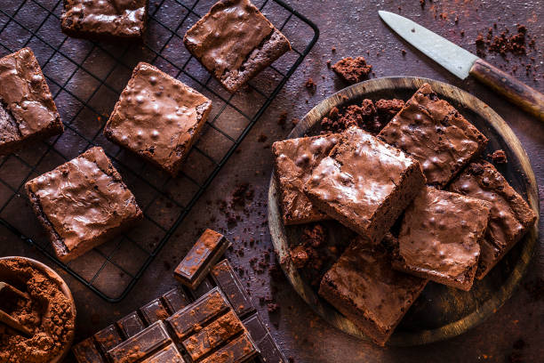

Brownie
Home

Description
For years, I couldn’t seem to find a recipe for brownies that met my standards. Anytime I made homemade brownies, I wanted them to be just like the ones I ate as a kid – super fudgy, moist, and chocolaty, with crispy edges and crackly tops. But the thing is, these brownies didn’t come from a recipe. We always made them from a box. Nowadays, I prefer to bake from scratch, but no brownie recipe I tried could live up to the chocolate brownies of my childhood.
I’ve had this brownie recipe on repeat since the first time I tried it. It calls for basic pantry ingredients, and it’s hardly more difficult than using a mix. As for the brownies, they’re true perfection – glossy, fudgy, and filled with rich chocolate flavor. Trust me, you’re going to want to make them ASAP!
Ingredients
- ½ cup butter
- 1 cup white sugar
- 2 large eggs
- 1 teaspoon vanilla extract
- ⅓ cup unsweetened cocoa powder
- ½ cup all-purpose flour
- ¼ teaspoon salt
- ¼ teaspoon baking powder
Steps
- Preheat the oven to 350 degrees F (175 degrees C). Grease and flour an 8-inch square pan.
- Melt 1/2 cup butter in a large saucepan. Remove from heat, and stir in sugar, eggs, and 1 teaspoon vanilla. Beat in 1/3 cup cocoa, flour, salt, and baking powder. Spread batter into prepared pan.
- Bake in the preheated oven until top is dry and edges have started to pull away from the sides of the pan, about 25 to 30 minutes. Let cool briefly before frosting.
- To make the chocolate frosting: Combine softened butter, confectioners' sugar, 3 tablespoons cocoa, honey, and 1 teaspoon vanilla extract in a bowl. Stir until smooth. Frost brownies while they are still warm.